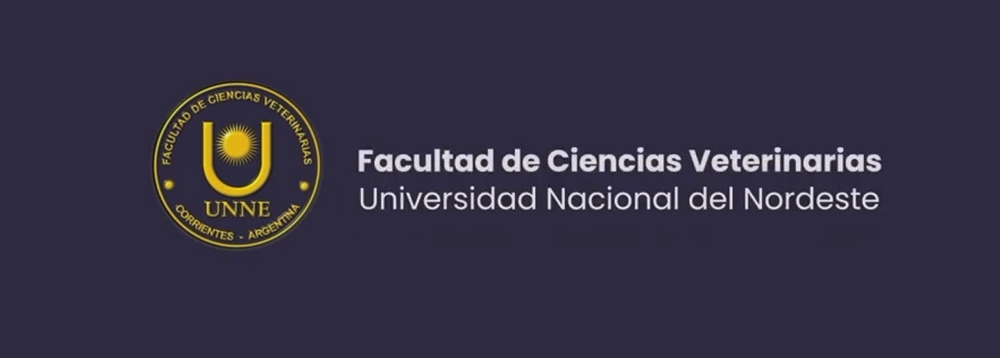

Facultad de Ciencias Veterinarias

Carrera: Ciencias Veterinarias (Medicina Veterinaria).
Duración: 5 años y 6 meses.
Modalidad: presencial.
Título: Médico/a Veterinario/a.
Ubicación: calle Sargento Cabral 2139, ciudad de Corrientes, provincia de Corrientes, Argentina.
La carrera prepara profesionales para trabajar en áreas como:
- Salud y bienestar animal.
- Clínica y atención de animales domésticos.
- Producción y sanidad de animales de granja.
- Salud pública, epidemiología y control de alimentos.
- Investigación y cuidado del medioambiente.
- Requisitos obligatorios digitales:
- DNI argentino (frente y dorso en un mismo archivo) o Pasaporte para extranjeros.
- Foto digital 4x4 con fondo blanco.
- Título secundario (Nivel Medio), constancia de título en trámite o certificado de finalización de estudios sin adeudar materias.
- Constancia de vacunación (Vacuna Doble Adulto Bacteriana o Triple Bacteriana).
El Plan de Estudios (Plan 2026) de la carrera de Ciencias Veterinarias en la UNNE está estructurado en 5 años y medio (11 cuatrimestres) con una carga horaria total de 4.000 horas reloj. El plan combina formación teórica, talleres prácticos desde el primer año y una fuerte práctica profesional final.
A continuación se detalla la distribución de las asignaturas por año:
🔹 Primer Año
- Anatomía I
- Histología y Embriología
- Biología Celular y Molecular
- Química Biológica
- Biofísica
- Introducción a las Ciencias Veterinarias
- Práctica Integradora I
🔹 Segundo Año
- Anatomía II
- Fisiología
- Microbiología e Inmunología
- Genética y Mejoramiento Animal
- Bioestadística y Metodología de la Investigación
- Economía y Administración de Empresas
- Práctica Integradora II
🔹 Tercer Año
- Farmacología y Toxicología
- Patología General y Anatomía Patológica
- Parasitología y Enfermedades Parasitarias
- Nutrición y Alimentación Animal
- Agronomía y Cultivos Forrajeros
- Zootecnia y Sistemas de Producción
- Práctica Integradora III
🔹 Cuarto Año
- Semiología y Propedéutica Médica
- Patología Médica y Clínica de Pequeños Animales
- Patología Médica y Clínica de Grandes Animales
- Cirugía y Anestesiología
- Enfermedades Infecciosas
- Epidemiología y Salud Pública
- Práctica Integradora IV
🔹 Quinto Año
- Tecnología e Inspección de Alimentos
- Biotecnología de la Reproducción y Obstetricia
- Deontología, Legislación y Veterinaria Legal
- Toxicología Clínica y Ambiental
- Asignaturas Orientadas (El estudiante elige un trayecto específico):
- Orientación en Medicina de Pequeños Animales
- Orientación en Producción y Medicina de Grandes Animales
- Orientación en Salud Pública y Tecnología de Alimentos
🔹 Sexto Año (Primer Cuatrimestre)
- Residencia de Práctica Profesional Supervisada (PPS): Trabajo de campo e inserción territorial obligatoria.
- Práctica Integradora Final / Tesina de Grado: Defensa del trabajo integrador final para obtener el título de Veterinario/a.